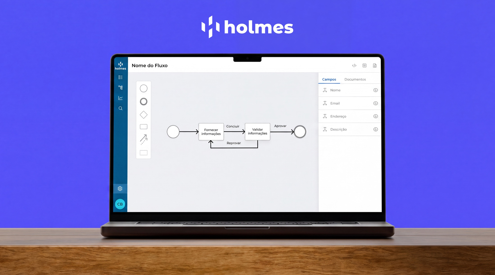
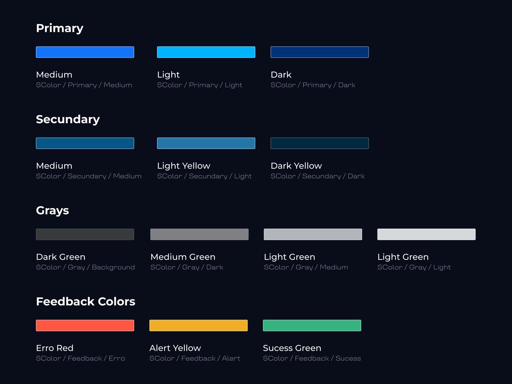
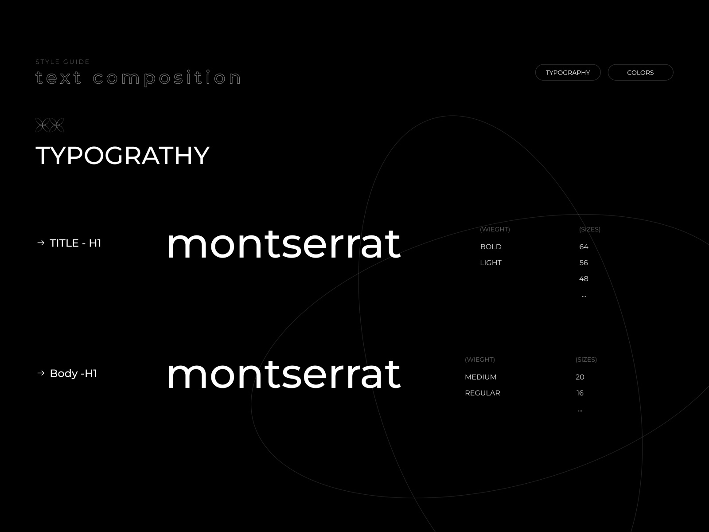
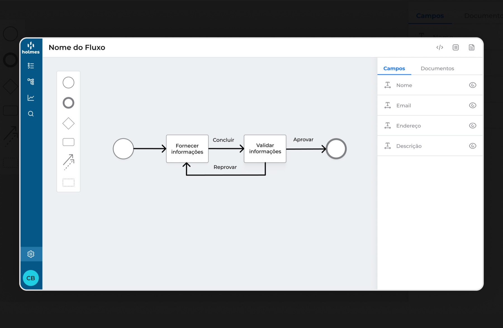
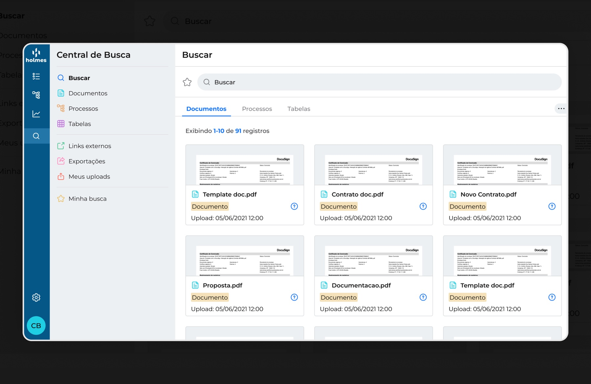
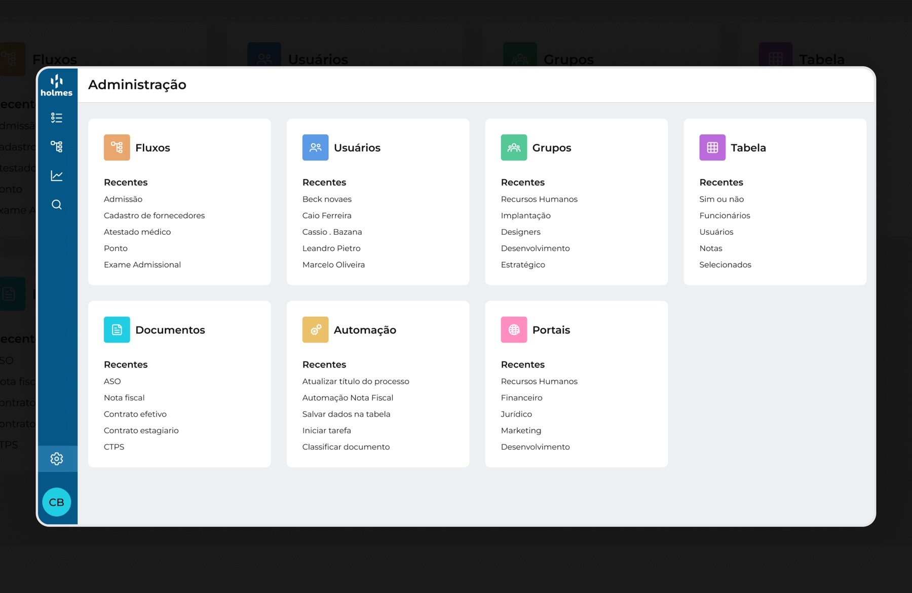
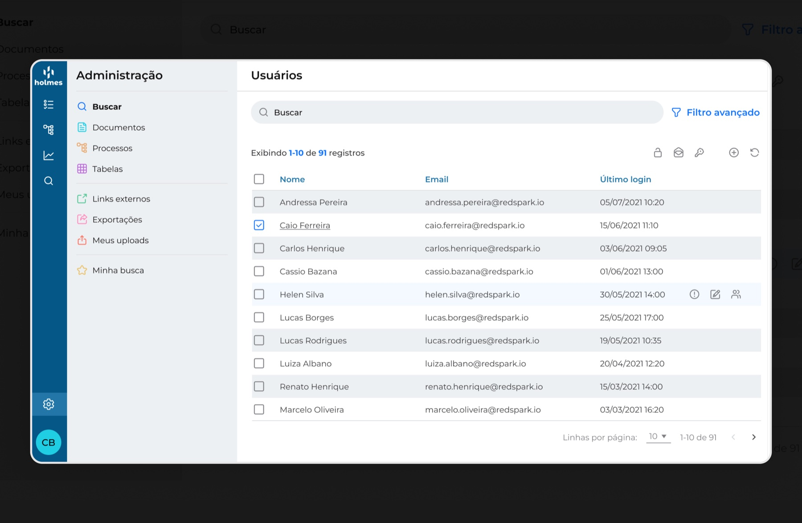

Discovery & Benchmark
Investigava o problema com os stakeholders e analisava referências de mercado antes de desenhar qualquer solução.
Plataforma que reúne automação de processos, gestão de documentos e IA para dar às empresas controle total da operação — sem código. Desenhei funcionalidades que tornam criar, aprovar e acompanhar fluxos algo simples.

O Holmes é uma plataforma SaaS B2B que reúne, em um só lugar, a automação de processos, a gestão de documentos e a inteligência artificial. Com um construtor de fluxos sem código, empresas de diferentes segmentos desenham seus próprios processos, centralizam documentos e ganham rastreabilidade de ponta a ponta — sem depender da TI.
Entrei nesse contexto como Product Designer dentro de uma squad multidisciplinar. Meu papel ia do entendimento do problema à interface final: alinhava as prioridades com o time, investigava a fundo cada necessidade, levantava hipóteses, prototipava soluções e acompanhava o desenvolvimento até o fim — garantindo que o que chegava ao usuário fosse fiel ao que foi desenhado.

Criei e mantive a guia de estilos do Holmes — paleta, escala tipográfica e componentes documentados. Foi o que trouxe consistência entre os módulos e acelerou tanto o desenho de novas telas quanto o desenvolvimento delas.

Investigava o problema com os stakeholders e analisava referências de mercado antes de desenhar qualquer solução.
Transformava necessidades em hipóteses e fluxos claros, sempre alinhados com a squad.
Prototipava novas funcionalidades para validar ideias rápido, antes de entrar em desenvolvimento.
Desenhava as telas dos módulos com consistência visual e foco em usabilidade.
Criei e mantive a guia de estilos do produto, padronizando componentes e acelerando o time.
Documentava e acompanhava o desenvolvimento de perto, garantindo fidelidade ao design.

O coração do produto: montar processos conectando etapas de forma visual e sem código. Cada etapa carrega seus campos e documentos no mesmo lugar, para que quem desenha o fluxo enxergue tudo o que será pedido e aprovado ao longo dele.

Central de busca que reúne documentos, processos e tabelas em um só ponto, com rastreabilidade e status de cada arquivo.

Ponto de entrada que centraliza fluxos, usuários, grupos, tabelas, automações e portais — com os itens recentes sempre à mão.

Gestão de quem entra e do que cada um pode fazer, com busca, filtro avançado e ações em lote sobre a listagem.
O design system trouxe consistência visual e de comportamento para todo o produto.
Criação e desenvolvimento de protótipos muito mais rápidos, com componentes reaproveitáveis.
Melhora na percepção dos clientes ao criar e aprovar fluxos no dia a dia.